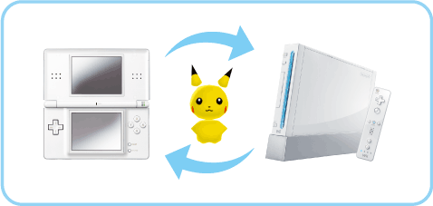

|
11
|
What You Need to Connect to DS
|
 |
|
You must meet the following conditions to deposit to or withdraw Pokémon from Pokémon Diamond or Pokémon Pearl. Required Conditions
You will need to have the Pokédex and a Poké Ball in Pokémon
Diamond or Pokémon Pearl.What
you need
One Nintendo DS
or Nintendo DS Lite
One Nintendo DS Pokémon
Diamond or Pokémon Pearl Game Card
* My Pokémon Ranch can connect only to English-language versions Pokémon Diamond and Pokémon Pearl Game Cards. If you are ready to connect, please refer to "12. Connect to DS."  Notes
on Wireless Play
Please pay attention to the points below for Wireless Play. A
During wireless game play, an icon will appear on either the
upper or lower screen showing the wireless signal strength. The icon
* You will know when your DS is in wireless mode when the Power Indicator LED blinks rapidly (green or red). Important Wireless Communications
Guidelines:
|
 |
 |
 |